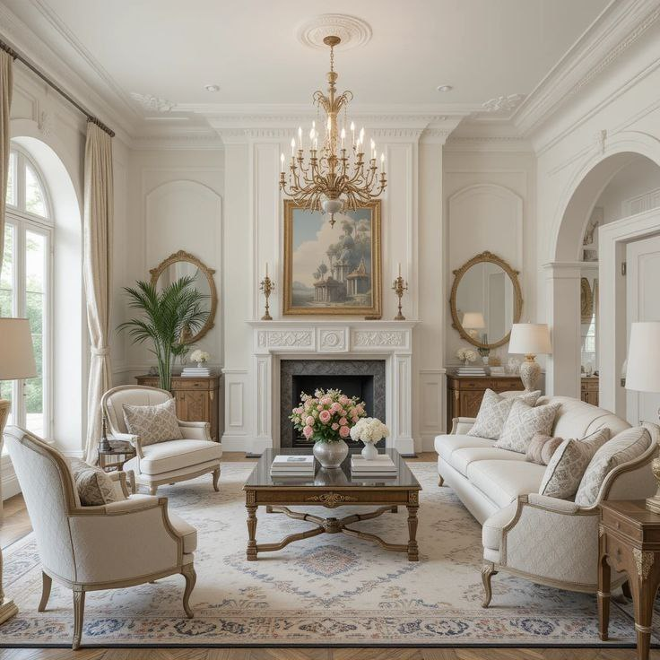
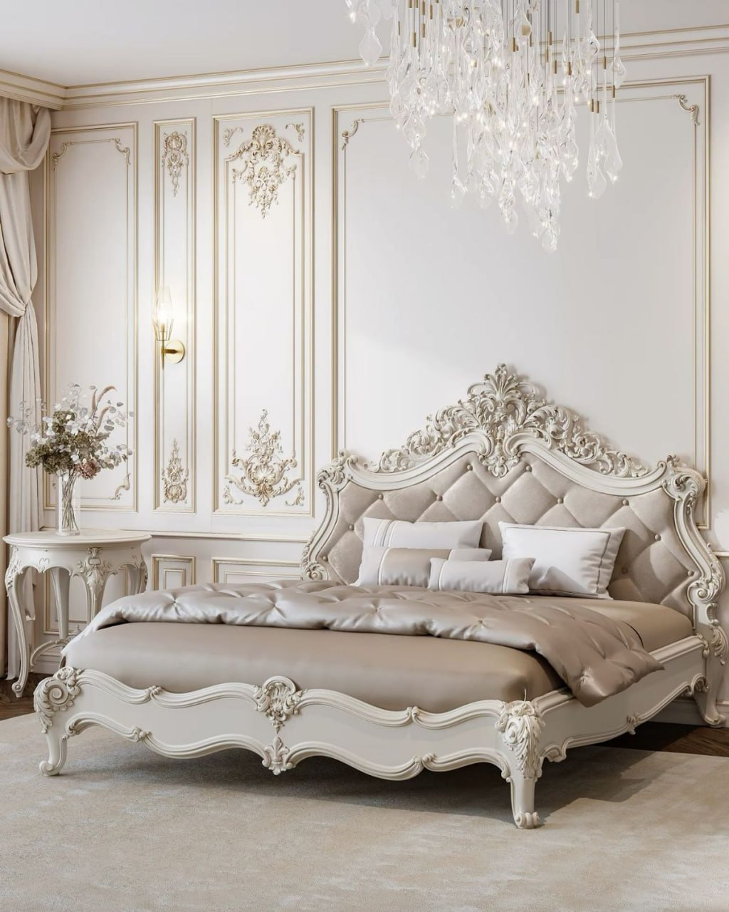
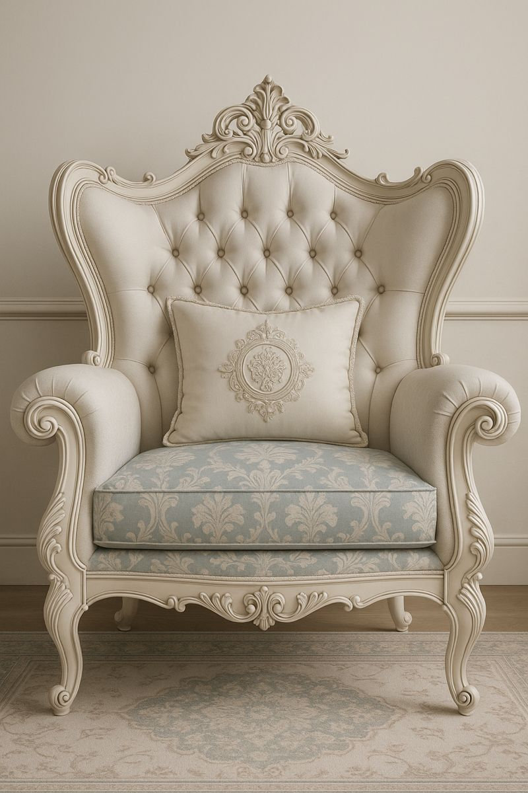
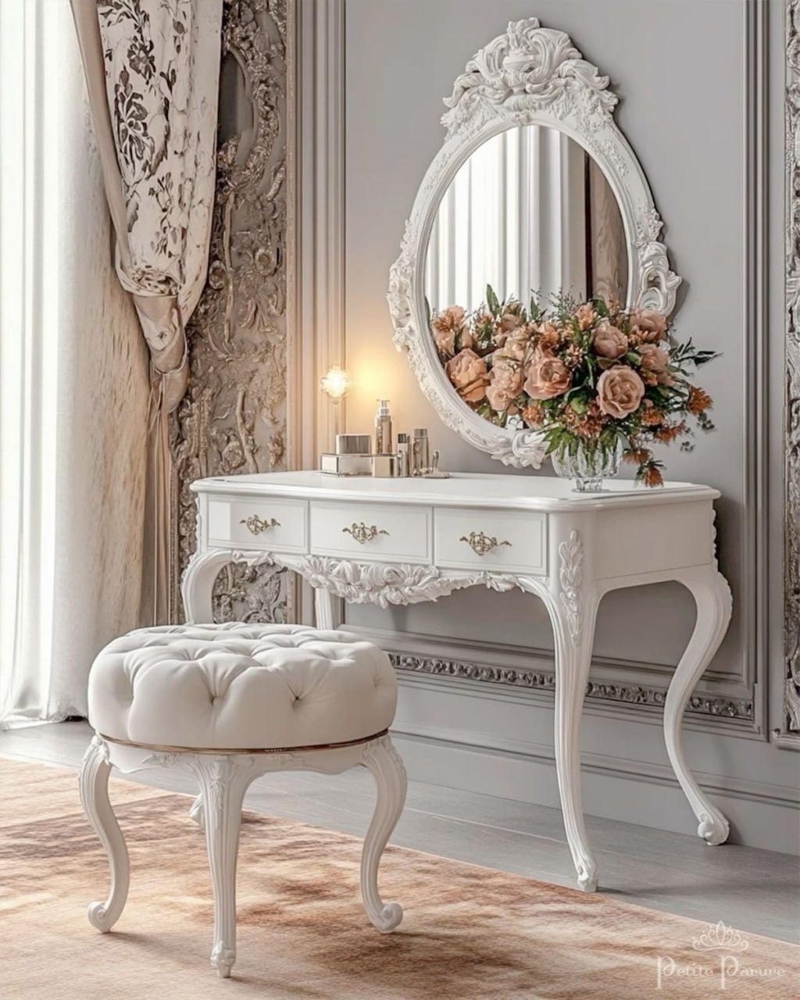

Выкупаем элитную мебель б/у: барокко, рококо, классику, дизайнерские и итальянские гарнитуры. Честная оценка за 30 минут, бесплатный демонтаж и вывоз, оплата сразу на месте.
📞 +998 77 129-99-55
Оцениваем по реальной стоимости элитной и дизайнерской мебели — платим больше, чем перекупщики на базаре.
Пришлите фото в Telegram — назовём предварительную цену быстро, без выезда и обязательств.
Аккуратный демонтаж, упаковка, погрузка и транспорт — всё за наш счёт, даже с верхних этажей.
Барокко, рококо, классика, антиквариат, массив, импортные гарнитуры — чем ценнее, тем дороже.

Кровати с резьбой и позолотой, туалетные столики, прикроватные тумбы, комоды с зеркалами.

Итальянские и европейские диваны, кресла, банкетки в классическом и дизайнерском исполнении.

Классические стенки, витрины, серванты, буфеты, библиотеки и кабинеты из массива.
Сфотографируйте мебель и пришлите в Telegram или позвоните +998 77 129-99-55.
За ~30 минут назовём цену. При необходимости приедет оценщик в удобное время.
Демонтируем, вывезем и оплатим на месте — наличными или переводом.
Цена зависит от стиля, материала, бренда, состояния и сохранности. Ниже — ориентировочные диапазоны выкупа. Точную сумму называем после оценки по фото или на месте: +998 77 129-99-55.
| Категория | Состояние | Цена выкупа, сум |
|---|---|---|
| Спальный гарнитур барокко/рококо (импорт) | хорошее | 3 000 000 – 15 000 000+ |
| Мягкая мебель премиум (диван + кресла, Италия) | хорошее | 2 000 000 – 8 000 000 |
| Классическая гостиная (стенка, витрины) | хорошее | 1 500 000 – 6 000 000 |
| Кабинет / библиотека из массива | хорошее | 2 000 000 – 9 000 000 |
| Антикварный комод / сервант / буфет | с патиной/дефектами | 1 000 000 – 5 000 000 |
Диапазоны ориентировочные — финальная цена зависит от конкретной модели, бренда, года и состояния. Выезд и оценка бесплатные и ни к чему не обязывают.
На досках объявлений элитную мебель приходится месяцами ждать покупателя, торговаться и самому решать вопрос с громоздким демонтажом и доставкой. Мы оцениваем сразу, выезжаем в удобное время, бережно демонтируем и вывозим за свой счёт, а деньги отдаём на месте. Быстро, безопасно и без хлопот.
Барокко, рококо, классику, ампир, модерн; итальянские и европейские гарнитуры, дизайнерскую и антикварную мебель, премиум мягкую мебель, кабинеты и гостиные из массива.
Бесплатно. Предварительную оценку даём за ~30 минут по фото, а демонтаж, погрузку и вывоз берём полностью на себя.
Да. Элитную и антикварную мебель выкупаем даже с потёртостями и реставрационными дефектами — оцениваем по фактическому состоянию.
В пределах Ташкента — в день обращения, в удобное для вас время. Работаем ежедневно с 09:00 до 21:00, выезжаем и в область.
Платим сразу на месте — наличными или переводом на карту. Деньги отдаём до вывоза мебели.
Да. У нас своя бригада и транспорт — аккуратно разберём, упакуем и спустим мебель с любого этажа. Это бесплатно.
«Продал спальный гарнитур в стиле барокко — оценили дороже, чем на базаре, забрали в тот же день. Всё аккуратно.»
«Импортный итальянский диван и кресла. Приехали с оценщиком, цену назвали честную, демонтаж и вывоз бесплатно.»
«Была старинная мебель от бабушки — выкупили антиквариат дорого, вынесли сами с 4 этажа.»
Пришлите фото — назовём цену за 30 минут. Приедем, заплатим и вывезем сами, бесплатно.
📞 +998 77 129-99-55